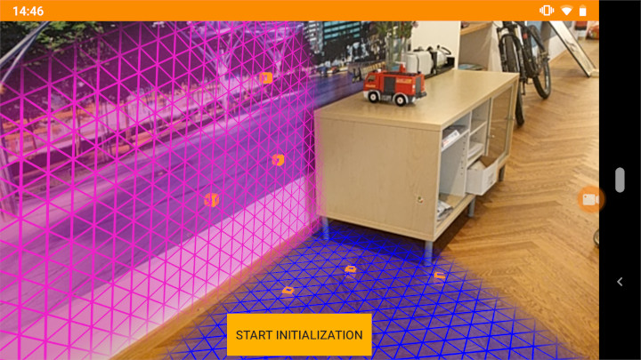

Instant Tracking
The following sections detail the instant tracking feature of the Wikitude Native SDK by introducing a minimal implementation, showcasing the simplicity the Wikitude Native SDK provides.
SMART - Seamless AR Tracking
SMART is a seamless API which integrates ARKit, ARCore and Wikitude’s SLAM in a single augmented reality SDK, cross-platform, for any device. It ensures the delivery of the best possible augmented reality experience on a wider range of devices, covering 92,6% of iOS devices and about 35% of Android devices available in the market.
SMART is enabled by default but can be disabled in the InstantTrackerConfiguration with setSMARTEnabled. This behaviour can not be changed during runtime.
InstantTrackerConfiguration configuration = new InstantTrackerConfiguration();
configuration.setSMARTEnabled(false);
instantTracker = mWikitudeSDK.getTrackerManager().createInstantTracker(this, configuration);
To enable ARCore with Wikitude follow the instructions in the documentation of ARCore in the section Enable ARCore. This can also be seen in the examples app.
To check if the device supports platform assisted tracking with SMART (tracking with ARCore) TrackerManager.isPlatformAssistedTrackingSupported must be used. ARCore has a mechanism to download and install the required ARCore companion app automatically. Initiating this procedure with the Wikitude Native SDK is a two step process of calling TrackerManager.isPlatformAssistedTrackingSupported and, if applicable, creating an instant tracker using TrackerManager.createInstantTracker. The first call will start a continuous query to determine whether the current device supports ARCore. It will repeatedly report the current status through the onAvailabilityChanged callback function. This callback provides one of the following enumeration constants as an input parameter.
| value | action |
|---|---|
| INDETERMINATE_QUERY_FAILED | The query failed for some reason. Try again or create the tracker to run without ARCore. The callback will not be invoked again. |
| CHECKING_QUERY_ONGOING | The query is currently ongoing. No action is required. The callback will be invoked again. |
| UNSUPPORTED | The device does not support ARCore. Create the tracker to run without ARCore. The callback will not be invoked again. |
| SUPPORTED_UPDATE_REQUIRED | The device does support ARCore, but the companion app needs to be installed or updated. Create the tracker to start the installation process. The callback will be invoked again. |
| SUPPORTED | The device does support ARCore and the current version of the companion is already installed. Create the tracker to run with ARCore. The callback will not be invoked again. |
Translated into Java code, the table results in the following snippet.
wikitudeSDK.getTrackerManager().isPlatformAssistedTrackingSupported(new IsPlatformAssistedTrackingAvailableCallback() {
@Override
public void onAvailabilityChanged(SmartAvailability availability) {
switch (availability) {
case INDETERMINATE_QUERY_FAILED:
/* may try again here */
instantTracker = wikitudeSDK.getTrackerManager().createInstantTracker(InstantTrackingActivity.this, null);
break;
case CHECKING_QUERY_ONGOING:
/* be patient; do nothing */
break;
case UNSUPPORTED:
case SUPPORTED_UPDATE_REQUIRED:
case SUPPORTED:
if (instantTracker == null) {
instantTracker = wikitudeSDK.getTrackerManager().createInstantTracker(InstantTrackingActivity.this, null);
}
break;
}
}
});
Be careful not to create the tracker twice when an installation of the ARCore app is required. You will receive the SUPPORTED_UPDATE_REQUIRED constant followed by the SUPPORTED constant, but will want to only create the tracker once. The snippet presented avoids doubly creating the tracker by checking its reference for null.
SMART provides improved tracking capabilities at the expense of control. Because of that some Wikitude SDK features are not available when platform tracking capabilities are used by enabling SMART.
| Features | SMART ON and platform assisted tracking supported | SMART OFF |
|---|---|---|
| Improved Tracking | ✓ | x |
| Plane Orientation | x | ✓ |
| Camera Control | x | ✓ |
| Save and Load Instant Targets | x | ✓ |
| Plane Detection | x | ✓ |
Introduction
Instant tracking is an algorithm that, contrary to those previously introduced in the Wikitude SDK, does not aim to recognize a predefined target and start the tracking procedure thereafter, but immediately start tracking in an arbitrary environment. This enables very specific use cases to be implemented.
The algorithm works in two distinct states; the first of which is the initialization state. In this state the user is required to define the origin of the tracking procedure by simply pointing the device and thereby aligning an indicator. Once the alignment is found to be satisfactory by the user (which the users needs to actively confirm), a transition to the tracking state is performed. In this state, the environment is being tracked, which allows for augmentations to be placed within the scene.

The instant tracking algorithm requires another input value to be provided in the initialization state. Specifically, the height of the tracking device above ground is required in order to accurately adjust the scale of augmentations within the scene. To this end, the example features a range input element that allows the height to be set in meters.
During the initialization, another parameter can be set which influences the alignment of the instant tracking ground plane. This ground plane is represented by the initialization indicator and can be rotated in order to start instant tracking at e.g. a wall instead of the floor.
Please refer to the InstantTrackerConfiguration reference for detailed information.
Basic Instant Tracking
The Instant Tracking example provides a minimal implementation of the instant tracking algorithm. First make sure we import the packages below.
import com.wikitude.tracker.InstantTracker;
import com.wikitude.tracker.InstantTrackerListener;
import com.wikitude.tracker.InstantTarget;
import com.wikitude.tracker.InitializationPose;
import com.wikitude.tracker.InstantTrackingState;
Next we have to make some additions to our Activity. In order to use instant tracking, the Activity has to implement the InstantTrackerListener and we will need an InstantTracker and an InstantTrackingState as members.
public class InstantTrackingActivity extends Activity implements InstantTrackerListener, ExternalRendering {
private InstantTracker instantTracker;
private InstantTrackingState currentTrackingState = InstantTrackingState.Initializing;
Initializing the InstantTracker is fairly straightforward. Just run this line in the initialization phase of the Activity.
instantTracker = wikitudeSDK.getTrackerManager().createInstantTracker(this, null);
An InstantTracker can, minimally, be instantiated with just the line above, although supplying drawables to be rendered in both the initialization state and the tracking state is advisable for any practical use case. Therefore a CustomSurfaceView instance is generated and supplied as well.
@Override
public void onRenderExtensionCreated(final RenderExtension renderExtension_) {
glRenderer = new GLRenderer(renderExtension_);
surfaceView = new CustomSurfaceView(getApplicationContext(), glRenderer);
driver = new Driver(surfaceView, 30);
setContentView(surfaceView);
FrameLayout viewHolder = new FrameLayout(getApplicationContext());
setContentView(viewHolder);
viewHolder.addView(surfaceView);
To use our CustomSurfaceView for the initialization of InstantTracker, implement the onInitializationPoseChanged callback function of the InstantTrackerListener.
@Override
public void onInitializationPoseChanged(InstantTracker tracker, InitializationPose pose) {
StrokedRectangle strokedRectangle = getRectangle();
strokedRectangle.projectionMatrix = pose.getProjectionMatrix();
strokedRectangle.viewMatrix = pose.getViewMatrix();
}
This callback function supplies an InstantTracker and the current InitializationPose, the latter of which can be used to set the pose of the augmentation, in our example an StrokedRectangle, so it is displayed properly during the initialization state.
When using SMART and ARCore is supported it is only possible to start tracking once ARCore has found a plane. It is advisable to inform the user when it is possible to start tracking. In our example this is done by changing the color of the augmentation from red, when tracking is not possible, to green, when it is possible. To check if tracking is possible InstantTracker.canStartTracking can be used.
@Override
public void onInitializationPoseChanged(InstantTracker tracker, InitializationPose pose) {
[...]
if (instantTracker.canStartTracking()) {
strokedRectangle.setColor(0.0f, 1.0f, 0.0f);
} else {
strokedRectangle.setColor(1.0f, 0.0f, 0.0f);
}
}
We have to make sure that we always know in which state the instant tracker currently is. In order to assure this, we update currentTrackingState in every call of onStateChanged.
@Override
public void onStateChanged(InstantTracker tracker, InstantTrackingState state) {
currentTrackingState = state;
runOnUiThread(() -> {
if (state == InstantTrackingState.Tracking) {
changeStateButton.setText(R.string.instant_tracking_button_start_initialization);
getRectangle().setColor(1.0f, 0.58f, 0.16f);
} else {
changeStateButton.setText(R.string.instant_tracking_button_start_tracking);
}
});
}
Next we need a means to transition from one state to the other. For this task we provide a button, which toggles the current tracking state.
final Button changeStateButton = (Button) findViewById(R.id.on_change_tracker_state);
changeStateButton.setOnClickListener(new View.OnClickListener() {
@Override
public void onClick(final View view) {
if (currentTrackingState == InstantTrackingState.Initializing) {
instantTracker.setState(InstantTrackingState.Tracking);
} else {
instantTracker.setState(InstantTrackingState.Initializing);
}
}
});
Now we can switch between the two states, so we need to update position of the rectangle once the tracking state is active, which we do in the onTracked callback function.
@Override
public void onTracked(InstantTracker tracker, InstantTarget target) {
StrokedRectangle strokedRectangle = getRectangle();
strokedRectangle.projectionMatrix = target.getProjectionMatrix();
strokedRectangle.viewMatrix = target.getViewMatrix();
}
Lastly, we provide a SeekBar to set the deviceHeight property of the InstantTracker. While this change is, strictly speaking, not required, we strongly recommend every application to supply the device height accurately by this method or another for the Wikitude SDK to provide an accurate scale.
final SeekBar heightSlider = (SeekBar) findViewById(R.id.heightSeekBar);
heightSlider.setMax(190);
heightSlider.setProgress(90);
heightSlider.setOnSeekBarChangeListener(new SeekBar.OnSeekBarChangeListener() {
@Override
public void onProgressChanged(SeekBar seekBar, int progress, boolean fromUser) {
float height = (progress + 10) / 100.f;
instantTracker.setDeviceHeightAboveGround(height);
heightBox.setText(String.format( "%.2f", height ));
}
@Override
public void onStartTrackingTouch(SeekBar seekBar) {
}
@Override
public void onStopTrackingTouch(SeekBar seekBar) {
}
});
The example outlined in this section renders an orange rectangle augmentation when in initialization state which then stays on its originally assigned position when in tracking state. While the example is quite trivial, we believe it serves the purpose of familiarizing the reader with the core concepts of instant tracking well.

Instant Scene Picking
The instant tracking feature further allows for 3D points to be queried from the underlying point cloud structure. This section is concerned with showcasing this feature based on the corresponding sample of the sample application.
To utilize this feature a 2D input position on the screen is required. The OnTouchListener of the GLSurfaceView is set for that purpose.
this.surfaceView.setOnTouchListener(new View.OnTouchListener() {
@Override
public boolean onTouch(View v, MotionEvent event) {
[...]
}
});
The onTouch function is implemented to query the touch position and pass these coordinates to the convertScreenCoordinateToPointCloudCoordinate function. These input coordinates have their origin in the top-left corner of the screen and are within the interval [0, screen_width_in_pixels) and [0, screen_height_in_pixels). Within the completion handler function, a boolean value and a 3D point is received. The former informs on whether the operation completed successfully or not; the latter contains the result in case of success, null in case of failure. Note that the query will fail whenever no point cloud position can be found for the input coordinate within a specific interval. For successful queries a StrokedCube instance is generated and placed at the resulting position as an augmentation.
this.surfaceView.setOnTouchListener(new View.OnTouchListener() {
@Override
public boolean onTouch(View v, MotionEvent event) {
if (event.getAction() == MotionEvent.ACTION_DOWN) {
Point2D<Float> screenCoordinates = new Point2D<>();
screenCoordinates.setX(event.getX());
screenCoordinates.setY(event.getY());
instantTracker.convertScreenCoordinateToPointCloudCoordinate(screenCoordinates, new InstantTrackerScenePickingCallback() {
@Override
public void onCompletion(boolean success, Point3D result) {
if (success) {
StrokedCube strokedCube = new StrokedCube();
strokedCube.setXScale(0.05f);
strokedCube.setYScale(0.05f);
strokedCube.setZScale(0.05f);
strokedCube.setXTranslate(result.getX());
strokedCube.setYTranslate(result.getY());
strokedCube.setZTranslate(result.getZ());
glRenderer.setRenderablesForKey("" + cubeID++, strokedCube, null);
}
}
});
}
return true;
}
});
Finally, running the sample allows cube augmentations to be placed on screen touch when in tracking state.
instant scene picking on the floor of the Wikitude offices
Persistent Instant Targets
The save and load instant targets feature allows for AR experiences to be persistently accessed by multiple users across devices and operating systems. Furthermore instant targets can be expanded on the fly. This section is concerned with showcasing this feature based on the corresponding samples of the sample application. This feature is not available with platform assisted tracking enabled.
Save Instant Target
To save an instant target there has to be an active InstantTracker in the tracking state and the directories of the provided path have to exist. Any permissions required to write to the provided path have to be granted. Providing a Handler to receive the callbacks on a specific thread is optional.
instantTracker.saveCurrentInstantTarget(
new File(getExternalFilesDir(null), "savedTarget.wto").getAbsolutePath(),
new CompletionCallback() {
@Override
public void onCompletion() {
// ...
}
},
new ErrorCallback() {
@Override
public void onError(@NonNull final WikitudeError error) {
// ...
}
},
new Handler(getMainLooper()) // Receive callbacks on main thread.
);
Load Instant Target
To load an instant target there has to be an active tracker and a previously saved instant target.
The InstantTargetRestorationConfiguration defines the behaviour of the loaded instant target. In the example the policy is set to ALLOW_EXPANSION which means that the Wikitude SDK will try to find new points it can track.
InstantTargetRestorationConfiguration configuration = new InstantTargetRestorationConfiguration();
configuration.setInstantTargetExpansionPolicy(InstantTargetRestorationConfiguration.InstantTargetExpansionPolicy.ALLOW_EXPANSION);
To load an previously saved instant target, a TargetCollectionResource has to be created from the file saved by saveCurrentInstantTarget.
String savedTargetPath = "file://" + new File(getExternalFilesDir(null), "savedTarget.wto").getAbsolutePath();
TargetCollectionResource savedTarget = wikitudeSDK.getTrackerManager().createTargetCollectionResource(savedTargetPath);
After the instant target is loaded the tracker will immediately try to find and track it. Providing a Handler to receive the callbacks on a specific thread is optional.
instantTracker.loadExistingInstantTarget(
savedTarget,
new CompletionCallback() {
@Override
public void onCompletion() {
// ...
}
},
new ErrorCallback() {
@Override
public void onError(@NonNull final WikitudeError error) {
// ...
}
},
configuration,
new Handler(getMainLooper()) // Receive callbacks on main thread.
);
Plane Detection - Experimental
Once Plane detection is enabled, the Wikitude SDK will search for planar surfaces in the representation of the scene (the point cloud). Sufficient and accurate information will then produce planar surfaces, that developers can use to interact with the actual scene. Hit testing will use found planes for a better estimate of depth values in the scene. The algorithm can detect different types of planes
Horizontal Up(e.g. floor, carpet, table)Horizontal Down(e.g. ceiling)Vertical(walls,...)Arbitrary(ramps, staircases,...)
Developers can choose which type of planes they are interested in and filter correspondingly.
To use plane detection the InstantTracker has to be created with an InstantTrackerConfiguration that has plane detection enabled.
For this purpose the InstantTrackerConfiguration.enablePlaneDetection has to be called with a PlaneDetectionConfiguration.
Currently plane detection is only available with SMART disabled.
e.g.:
protected void onCreate(Bundle savedInstanceState) {
...
PlaneDetectionConfiguration planeDetectionConfiguration = new PlaneDetectionConfiguration();
planeDetectionConfiguration.setPlaneFilter(PlaneFilter.ANY);
planeDetectionConfiguration.enableConvexHull();
InstantTrackerConfiguration trackerConfiguration = new InstantTrackerConfiguration();
trackerConfiguration.setSMARTEnabled(false);
trackerConfiguration.enablePlaneDetection(planeDetectionConfiguration);
instantTracker = wikitudeSDK.getTrackerManager().createInstantTracker(PlaneDetectionActivity.this, trackerConfiguration);
...
}
The InstantTrackerlistener has three callbacks for plane detection which notify about recognition, tracking, and losing tracking.
@Override
public void onPlaneRecognized(final InstantTracker tracker, final Plane plane) {
PlanePolygon planePolygon = new PlanePolygon();
planePolygon.setPoints(plane.getConvexHull());
planePolygon.viewMatrix = plane.getViewMatrix();
switch (plane.getPlaneType()) {
case HORIZONTAL_UPWARD:
planePolygon.setColor(0, 0, 1);
break;
case VERTICAL:
planePolygon.setColor(0.93f, 0.13f, 0.78f);
break;
case ARBITRARY:
planePolygon.setColor(0.25f, 0.93f, 0.13f);
break;
}
glRenderer.setRenderablesForKey("plane-" + plane.getUniqueId(), planePolygon, null);
}
@Override
public void onPlaneLost(final InstantTracker tracker, final Plane plane) {
glRenderer.removeRenderablesForKey("plane-" + plane.getUniqueId());
}
@Override
public void onPlaneTracked(final InstantTracker tracker, final Plane plane) {
PlanePolygon planePolygon = (PlanePolygon) glRenderer.getRenderableForKey("plane-" + plane.getUniqueId());
planePolygon.viewMatrix = plane.getViewMatrix();
planePolygon.setPoints(plane.getConvexHull());
}
A Plane can be rendered like all other tracking targets but in addition to the viewMatrix and extents it also provides a convex hull which can be rendered directly as a triangle fan.
InstantTracker.convertScreenCoordinateToPointCloudCoordinate will provide a 3d Point that is on the Plane when the hit ray intersects the plane.
